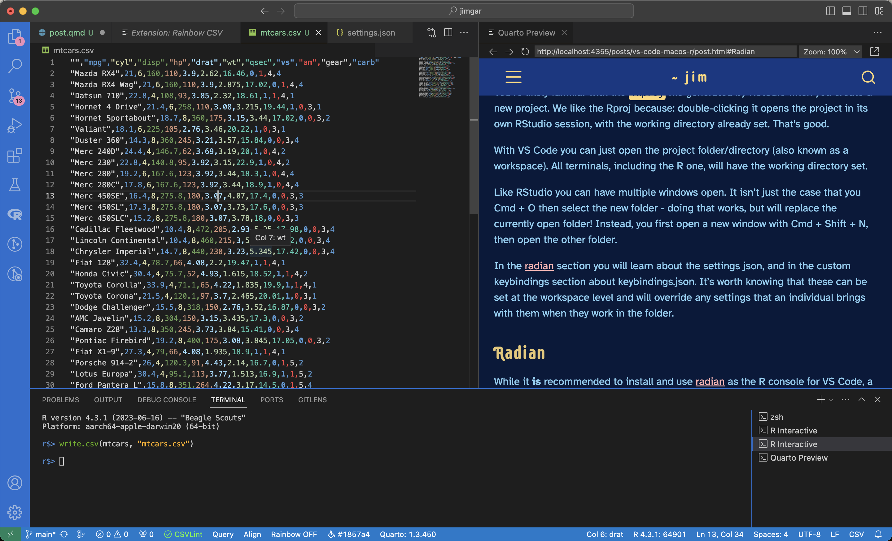

{
"r.bracketedPaste": true,
"r.rpath.mac": "/usr/local/bin/R",
"r.rterm.mac": "/Library/Frameworks/Python.framework/Versions/3.11/bin/radian",
"r.rterm.option": [
"--no-save",
"--no-restore",
"--r-binary=/usr/local/bin/R"
]
}I never thought I’d say this, but… I’m enjoying Visual Studio Code (VS Code) as an IDE for R. I’d even recommend it as an alternative to RStudio for the average R user. This is particularly true if you - like me - are getting interested in languages other than R, such as python.
Setting it all up isn’t super hard. The essential thing to know is that VS Code is primarily a customisable IDE that relies on extensions to add in support for most languages. For R, there’s a nice, simple guide on the VS Code website specifically for us. Install VS Code, follow the linked guide, and you should be ready to code. There’s also a wiki for the extension that is worth looking at.
What’s more esoteric are the bits and bobs of context you need to start getting the most out of VS Code, particularly if you come from the RStudio world - like I do! So this post contains some of the extra context that I think is worth knowing during/after setup.
Warning
- This post is specifically for mac users
- I haven’t done any package development in VS Code yet
- I don’t claim to be an advanced R or VS Code user
- Use any of my suggestions/instructions at your own risk!
Rproj vs Folder/Directory/Workspace
You’re likely familiar with the .Rproj file generated by RStudio when you create a new project. We like the Rproj because: double-clicking it opens the project in its own RStudio session, with the working directory already set. That’s good.
With VS Code you just open the project folder/directory (also known as a workspace). All terminals, including the R one, will have the working directory set. No Rproj required.
Like RStudio you can have multiple windows open, each for a separate project. It’s worth knowing that if you open another folder with File > Open Folder…, it will close the currently open folder. One window, one folder. If you want to have multiple windows each with their own folder, you first have to open a window with Cmd + Shift + N, and then open a folder.
In the radian section you will learn about the settings json, and in the custom keybindings section about keybindings.json. It’s worth knowing that these can be set at the workspace level and will override any user-level settings when anyone works in the folder.
Radian
While it is recommended to install and use radian as the R console for VS Code, a word of warning. This became the biggest pain point during my setup. I would try to run R code and get errors about not being able to find R and/or radian. If the same happens to you, try the following.
First, install radian however the site suggests. Then open VS Code’s settings.json. To do that, hit Cmd + Shift + P (this will open the command palette) and start typing in “open user settings (json)”. When the option is visible to you, click it and settings.json will open.
The settings json is a file of customisable settings for controlling the behaviour of VS Code. In this case, we want to tell it where to look for R and radian. Copy the following into your settings file and then replace the file paths for your machine.
r.rpath.mac and --r-binary point to your R. To find out where that is, run which R in the terminal.
r.rterm.mac points to your radian. You can find that with which radian.
Save the settings file. Now if you open an R file and attempt to run some code it should open a terminal and just “do the thing”.
Interactive viewer pane
You should have installed the R package httpgd during the initial setup. This package is a pre-requisite for using the interactive viewer pane. In VS Code the viewer works much the same way as in RStudio, but it has a couple of benefits like opening a new tab each time you view something, and better interactive filtering for tables. When running through this setup with a few people I’ve noticed that the interactive viewer is often a place where we encounter errors.
The solution every time is to add the code block below to ~/.Rprofile.
First of all, check if you have an ~/.Rprofile. If you don’t, make one. If you do, add the contents of this code block.
if (interactive() && Sys.getenv("RSTUDIO") == "") {
source(file.path(Sys.getenv(if (.Platform$OS.type == "windows") "USERPROFILE" else "HOME"), ".vscode-R", "init.R"))
}
if (interactive() && Sys.getenv("TERM_PROGRAM") == "vscode") {
if ("httpgd" %in% .packages(all.available = TRUE)) {
options(vsc.plot = FALSE)
options(device = function(...) {
httpgd::hgd(silent = TRUE)
.vsc.browser(httpgd::hgd_url(history = FALSE), viewer = "Beside")
})
}
}
options(vsc.rstudioapi = TRUE)Strictly speaking the options(vsc.rstudioapi = TRUE) line is not needed for this step. But it is a prerequisite for using RStudio addins, including awesome ones like codegrip, so you may as well include it.
Format on save
Did you know that there’s such a thing as “format on save”? It sounds terrible, right? Someone else’s idea of what looks good absolutely destroying your inspiring, elegant, unique code?
Well for me… It’s actually been kind of liberating. I would never have tried this, but recently at work I’ve been collaborating with colleagues on a python codebase. For consistency’s sake we all have the same settings for python, including use of a formatter with format on save enable. Whenever we save files the code gets formatted.
Yeah, it means your personal style disappears somewhat. But the truth is that most of us code similarly anyways. At work it has been great, because I don’t know all of the python idioms and apparently my code stinks of R.
Once we switched to the formatter? No more stinky typey. Idioms are largely upheld and we get to focus on solving the actual problems, not fretting over formatting and indentation. I’ve spent quite a bit of time with R in VS Code over the past month, and I have found the same sense of freedom.
There is a linter for R (lintr) and it is automatically set up when you install the R extension1. VS Code can pick this linter up and use it to format your code on save. You’re going to get shouted at a lot by the linter anyway, so if you’re curious about trying format on save, this is all you need to do:
In settings.json add the following items
[
"[r]": {
"editor.formatOnSave": true,
"editor.tabSize": 2,
"editor.detectIndentation": false
}
]The tab size and detect indentation items are there to stop lintr acting goofy with format on save. If you’re going to change lintr’s indentation settings (e.g. you prefer 4-space indentation), remove the tabsize one (or change it to 4).
With RStudio people use lintr in combination with styler, and sometimes GitHub actions, to apply style to their code. That’s fine. But it’s not for me, I prefer format on save. I literally just press Cmd + S and the formatting is taken care of, no matter what the issue is. It’s simple and immediate.
Note
If you hate the idea of format on save, or even a linter, and see them as an affront to the craft of programming: It’s ok. I get it. Everything you have to say is valid - you do you!
Extensions
These are the notable extensions that I have been using. You can find them by searching the extension marketplace with their name - they’re all rather distinct.
None of them are inherently needed if you’re working with plain R scripts.
Rainbow CSV
I work with a lot of csv and dat files for work, and they require regular inspection. If I needed to look at them outside of R, usually I’d open the file in TextEdit or TextMate if small/simple, or Excel if not.
But that’s been massively reduced thanks to this extension, which is very fast and simple. It works on csv, tsv, and dat, with good instructions in the readme for customising behaviour.

Yay! That’s nice, right? 🌈
There’s a few non-obvious tools available as well. First, when hovering over values it tells you the column name.
Second, in the toolbar at the bottom of VS Code, you can see “Query”, and “Align”. These are awesome.
Query will open a table-viewer and access to RBQL (rainbow query language), which is basically SQL.
Align will align all of the colums by inserting whitespace, and you can then click the same button to shrink the table back. If you are going to do this the docs (and I!) recommend that you put the following in your settings json: It will create a temp file where the alignment and shrinking happens, leaving the original file untouched.
{
"rainbow_csv.align_in_scratch_file": true
}
Note
If you work with AWS there’s an extension for that, too. You can interact with all your usual services, including S3. Unlike the GUI, you don’t have to download (smaller) files from S3 just to view them. So if you have some csv that needs checking, you can literally just use the file explorer, click the filename, it will open in preview here in VS Code, and it will get the rainbow csv treatment! I think this is very cool!!!
GitLens
If you work with git this is nice. When you click on a line of code in the editor you get to see the git blame (ugh why is it called that) and commit message. There’s also a GitLens tab with history and graph in the bottom panel.
Quarto
Pretty self-explanatory. There’s great support for Quarto in VS Code. That’s how I’m writing this blog post :)
Peacock
Peacock adds colour to various parts of the VS Code window.
The real use for it is in colouring different workspaces. The settings get added to the workspace-specific settings json so they persist over time. If you have a couple of projects that you tend to flick between, the colour can help to orient you by differentiating between the windows.
R Debugger
To be honest I’ve not played with this much yet, or used it at all in earnest. I usually use the native debugger in the REPL. But it does have one enticing feature, which is a variable viewer.
Keyboard shortcuts
General
These are the ones that I find notable.
| Show/hide | |
| Cmd + J | Show/hide the terminal |
| Cmd + B | Show/hide the sidebar |
| Editor | |
| Ctrl + 1 | Focus on editor |
| Cmd + Shift + [ / ] | Cycle left / right through editor windows |
| Cmd + W | Close current editor window |
| Option + ↑ / ↓ | Move current line (or highlighted block) of text up/down |
| Cmd + Option + ↑ / ↓ | Insert cursor above or below current position |
| Cmd + Shift + V | Preview markdown file |
| Explorer | |
| Cmd + Shift + E | Focus on explorer |
| Cmd + ↓ | Open highlighted file from explorer |
| Ctrl + Enter | Open highlighted file from explorer (to the side) |
| Cmd + ← | Collapse all folders |
| Terminal | |
| Cmd + Ctrl + ↑ / ↓ | Grow/shrink the terminal pane |
| Cmd + Shift + [ / ] | Cycle left / right through terminals |
| Workspace | |
| Cmd + Shift + N | Open a new window |
| Cmd + O | Open a file or folder |
Note
Shrinking the terminal will cause the macOS system beep to kick in, which is annoying as hell. I think this shortcut is so useful that it’s actually worth deactivating the beep. It’s simple to do. First check if you have a file at ~/Library/KeyBindings/DefaultKeyBinding.dict
If you do, add the line from the code block below. If you don’t:
- Create the directory
~/Library/KeyBindings - Create the file
DefaultKeyBinding.dictin the new directory - Add the below to the file2
{
"^@\UF701" = "noop:";
}Alternatively, you can make custom keybindings in VS Code (see below for examples of how to do that).
R specific
These should all be familiar if you’re used to RStudio. The Quarto ones come with the Quarto extension.
| Run code | |
| Cmd + Enter | Run the current line or highlighted code |
| Cmd + Shift + Enter | Run the entire script |
| Quarto | |
| Cmd + Shift + K | Render and show preview |
| Cmd + Shift + I | Insert code chunk |
Custom keybindings
Like the settings file, there’s a keybindings.json for any bespoke keyboard shortcuts that you want to make. Open the command palette as before, but this time you’re looking for “Open Keyboard Shortcuts (JSON)”.
It is super useful to have something that can toggle between the terminal and editor. You can choose whatever keystrokes you like but Ctrl + ` is a common choice.
[
// toggle between the terminal and editor
{
"key": "ctrl+`",
"command": "workbench.action.terminal.focus"
},
{
"key": "ctrl+`",
"command": "workbench.action.focusActiveEditorGroup",
"when": "terminalFocus"
}
]For R, most of us have used RStudio extensively and are familiar with three shortcuts, namely
- Insert pipe (Cmd + Shift + M)
- Insert assignment operator (Option + -)
- Restart R session (Cmd + Shift + 0)
The keybindings below will add all of these to VS Code. It might look like there’s some duplication here for the pipe and assignment operator, and there kind of is. It’s just that you need to make the keybindings available to the editor and terminal separately (I tried to combine them but it didn’t work - if anyone knows how please get in touch!).
[
// keybindings for r/rmd/qmd
{
"key": "Cmd+Shift+m",
"command": "type",
"args": {
"text": " |>"
},
"when": "editorTextFocus && editorLangId =~ /r|rmd|quarto/"
},
{
"key": "Alt+-",
"command": "type",
"args": {
"text": " <- "
},
"when": "editorTextFocus && editorLangId =~ /r|rmd|quarto/"
},
// keybindings for R terminal (radian included)
{
"key": "Cmd+Shift+m",
"command": "workbench.action.terminal.sendSequence",
"args": {
"text": " |>"
},
"when": "terminalFocus"
},
{
"key": "Alt+-",
"command": "workbench.action.terminal.sendSequence",
"args": {
"text": " <- "
},
"when": "terminalFocus"
},
// restart R session
{
"key": "Cmd+Shift+0",
"command": "runCommands",
"args": {
"commands": [
"workbench.action.terminal.kill",
"r.createRTerm"
]
}
}
]